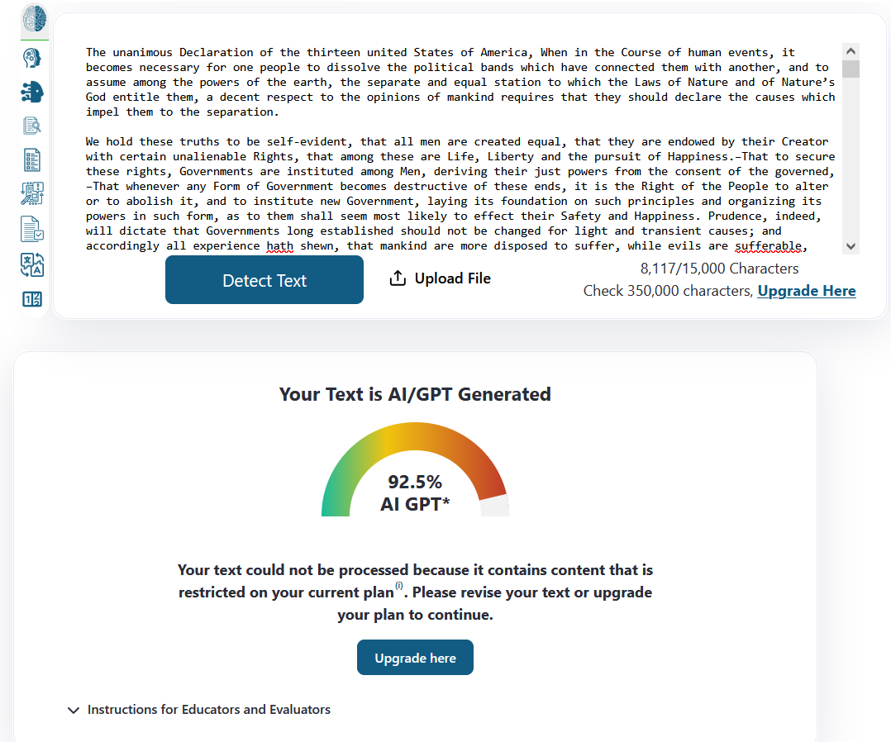

Identifying AI-Generated Text
AI Detectors
While AI detection tools such as ZeroGPT and Pangram are useful for getting an idea as to whether a piece of writing is AI-generated, they should not be relied upon solely because they are prone to errors. This can be tested easily by entering a very old piece of writing (such as the Declaration of Independence). The AI detector will likely report this text as being AI-generated. On the other hand, text that is AI-generated can be missed by AI detecors. It is even possible to ask AI to rephrase the text in order to avoid detection by AI detectors.

AI detectors work by detecting patterns that would be seen in AI-generated text. At their simplest, AI language models work by predicting which word is most likely to come after the previous one by analysing millions of words. This makes AI-generated text more predictable than human written text, which AI detectors leverage to determine whether a piece of text is AI-generated. While this sounds like it should work well, AI detectors are very rarely accurate and should not be treated as a consensus on whether a piece of writing is AI-generated.
Signs of AI Writing
Content
LLMs struggle to keep a neutral tone when describing a topic, instead often swaying towards promotional or advertisement-like writing. AI writing will also often emphasise the significance and legacy of a subject, even when it is actually quite mundane.